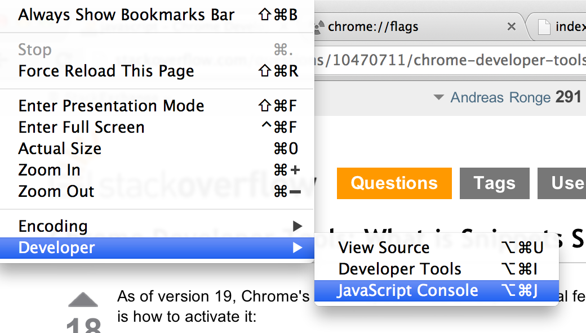
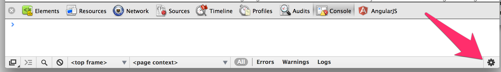
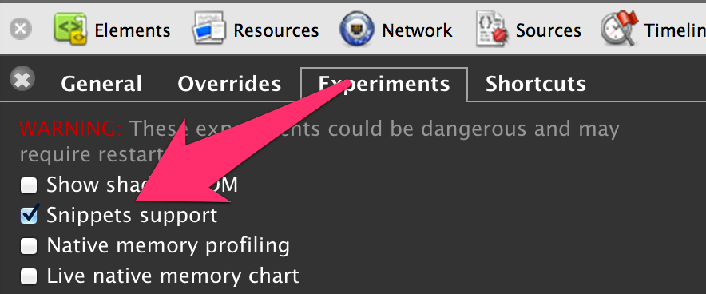
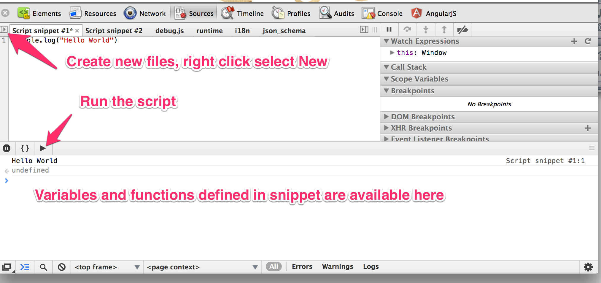

Snippet support for Chrome Developer Toolkit
1. Enable Developer Tools Experiments

2. Restart Chrome
3. Open Chrome Developer Tools

3. Open the Settings
Hit the settings gear icon in the lower right corner

4. Enable Snippet

5. Use Snippets
